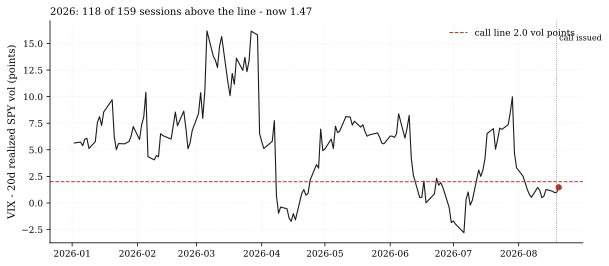
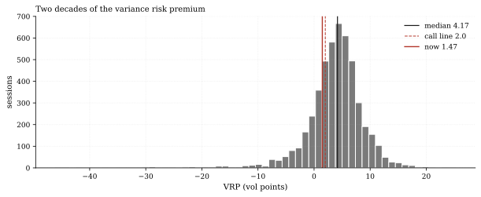
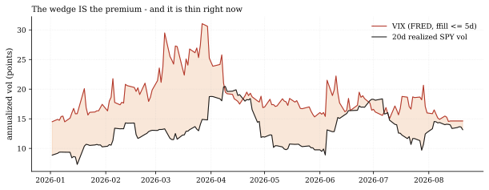

The one-paragraph version. The standing call vol-vrp-recovers-2 (issued 2026-08-19) says the variance risk premium - VIX minus 20-day realized SPY vol - recovers above 2.0 vol points within 60 sessions, a low bar in a year that spent 118 of 159 sessions above it (mean 5.47, full-sample median 4.17). The compression that prompted the call is still on the tape: the house grader's last observable VRP is 1.47 (August 20). But the fresher outside world says the wait may already be over - Cboe's VIX spot printed 15.45 on August 25 against our 13.29 realized vol, an estimated 2.16 premium, above the line. The catch is a pipeline one, and this note is as much about that: the house FRED cache carries real VIX prints only through August 13, the grader's bounded 5-session forward-fill stretches observations to August 20, and the cache refreshes on a 30-day staleness trigger - so the call formally waits on data that already exists outside the wall.
How we worked this problem
This is Vol Desk Notes issue 2 and a progress report on the standing call. The VRP series here is built exactly as the call's grader builds it - panel-calendar 20-day realized SPY vol, VIXCLS aligned onto that calendar with a forward-fill capped at five sessions - so every number reconciles with the Track Record to the decimal. The call's frozen prose said the premium was 1.27 at issue (measured on the pre-revision panel cut); on the current validated panel the issue-date reading recomputes to 1.01 - the same revision-episode disclosure the Rotation Monitor carried last cycle, reported both ways rather than quietly picked. We then set the compression against its 2026 and two-decade context, and cross-checked the stale house reading against Cboe's fresher spot print.
The data audit
| Source | Coverage | As-of | Role |
|---|---|---|---|
data/cache_panel_2007_2026.parquet | SPY daily closes | 2026-08-25 | realized-vol leg (grader-identical) |
data/rates/rates.parquet | FRED VIXCLS | 2026-08-13 (real prints) | implied-vol leg; grader ffill reaches 2026-08-20 |
Two staleness facts disclosed up front: the FRED cache refreshes on a
30-day trigger (armed September 13 at the earliest; the pull happens on
the first fetch that asks for rates thereafter) even though FRED itself already publishes through late August; and the grader's bounded ffill means every VRP observation after August 13 is built on a carry-forward VIX - at most five sessions of it. The funding cache (as-of 2026-07-31) is not used.
The external read
The outside tape says the compression is ending: Cboe's VIX spot printed 15.45 on August 25, in a low-to-moderate vol regime (Cboe VIX products); early August saw the VIX at its lowest since January while record options volume powered an equity surge (CNBC); and FRED's public VIXCLS series is already updated through late August (FRED VIXCLS). Our cross-check: external spot 15.45 minus house realized 13.29 puts the premium at an estimated 2.16 - above the call's 2.0 line. That estimate is not a house observation; it is what the call would likely read once fresh VIX lands in the cache.
Exhibits
Exhibit 1 - 2026 against the call line. 118 of 159 sessions above 2.0, mean 5.47 - and the current observable reading 1.47 (August 20), with the year's minimum -2.80 printed July 6 (VIX below realized vol outright in that window). The call allows 59 more sessions; formally only 1 has been observed since issue.

Exhibit 2 - where 1.47 sits in two decades. The full-sample median is 4.17; the current reading is deep in the left tail of the distribution - the premium is compressed by history's standard even after recovering from the issue-date 1.01.

Exhibit 3 - the wedge. VIX (carried forward after August 13, to a maximum of five sessions) against 20-day realized SPY vol, currently 13.29: the premium is the wedge between the lines, and it is thin.

So what - opportunities
- The call likely resolves on the next cache refresh: if the
- The staleness structure is now a documented, priced-in fact: the
- **The compression itself is the trade context the call was written
external 15.45 spot persists into the September FRED pull, the grader's first fresh observation would sit near the estimated 2.16 - a hit inside the window with 59 sessions of runway.
VRP call's observation cadence is gated by a 30-day cache trigger, and the Track Record grades only what the house pipeline can see - the machinery is honest about what it does not yet know.
against:** the mid-year sub-zero trough (-2.80) and the current sub-2.0 readings are the preconditions recovery windows have historically grown from, not the end of them.
So what - risks
- The external estimate is not evidence: 15.45 is one spot print on
- The ffill tail is quiet leverage: every reading from August 14-20
- Sub-2.0 premiums can persist: the year's own July episode printed
one day; VIX can round-trip before the cache refreshes, and the grader scores only house observations.
uses a carried-forward VIX against a moving realized-vol leg; a fast vol shock in that window would be invisible to the grader until fresh data lands.
-2.80; the median-era 4.17 premium is not a floor under the current regime.
Machinery: how this piece was produced
articles/2026-08-26-vrp-compression-watch/analysis.py builds the VRP series exactly as quantlab/report/calls.py grades it (same realized-vol window, same bounded ffill), reads the call's terms from articles/calls.json, computes the external-spot estimate from the attributed Cboe print minus the house realized-vol key, and writes every number above to assets/numbers.json plus the three figures (SVG + PNG twins).
Reproduce with: ``bash .venv/Scripts/python articles/2026-08-26-vrp-compression-watch/analysis.py ``
Limitations
- The house VRP observation ends 2026-08-20; panel dates beyond it have
- The external 15.45 spot is a single attributed print, not a series;
- The call's frozen 1.27-at-issue prose reflects the pre-revision
- FRED cache staleness (>30-day refresh trigger) is a house pipeline
no valid reading under the grader's 5-session ffill cap.
the 2.16 estimate inherits its date and its fragility.
2026-08-14 panel cut; the current-panel recomputation (1.01) is the disclosed alternative, and the grader's series is the authoritative one at maturity.
choice, not a data limitation; shortening it is an operator lever.
Sources - external reading list
| Claim | Source |
|---|---|
| VIX spot 15.45 on Aug 25, 2026 (used for the 2.16 premium estimate, cross-checked against house realized vol) | Cboe - VIX products |
| Early-August lowest-since-January VIX with record options volume | CNBC, Aug 8 2026 |
| FRED VIXCLS already updated through late August (the house cache lags by trigger, not by availability) | FRED VIXCLS |
calls-grader-parity; pandas; matplotlib